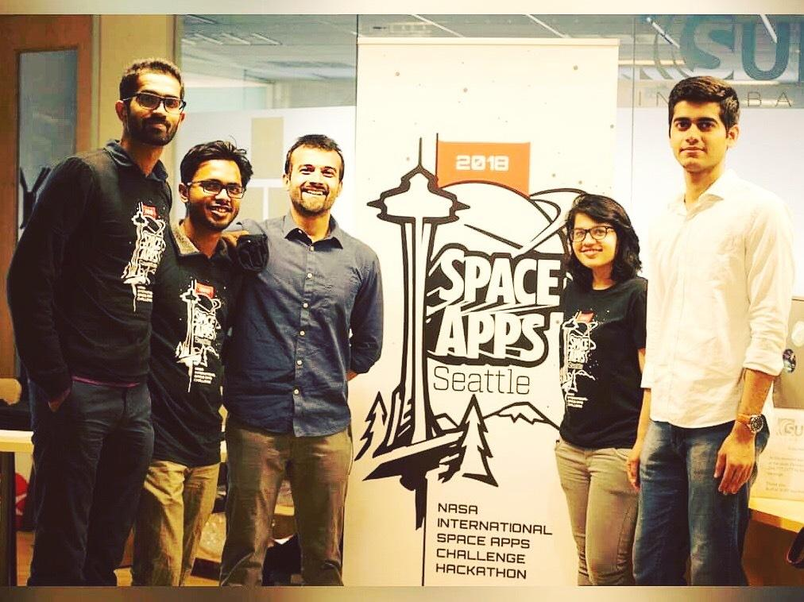

What: A mixed reality experience center that combines VR and 4D entertainment technologies to provide a gamified experience to facilitate experiential climate education. Why: Climate education is considered to be a boring topic by many who do not value science as they grow up. It’s time to make climate education fun! Major learning point: Designing for VR is harder/easier than you think depending on how you look at it. Highlight: NASA Space Apps Challenge Seattle Hackathon winner for Most Inspirational Hack. Product of a hackathon, Future Suture is the brainchild of Team Stardust Explorers (comprised of Proshonjit Mitra, Prithvi Shetty, Varun Panicker, Bhagyashri Nivdunge, and Pratik Mulchandani). This team had a good mix of Data Scientists, Developers, and a UX Designer, and keeping that context in mind, our team chose to accept the GLOBE-ally challenge of the NASA Space Apps Challenge competition. In this challenge, our goal was to effectively communicate insights using NASA data.
Product of a hackathon, Future Suture is the brainchild of Team Stardust Explorers (comprised of Proshonjit Mitra, Prithvi Shetty, Varun Panicker, Bhagyashri Nivdunge, and Pratik Mulchandani). This team had a good mix of Data Scientists, Developers, and a UX Designer, and keeping that context in mind, our team chose to accept the GLOBE-ally challenge of the NASA Space Apps Challenge competition. In this challenge, our goal was to effectively communicate insights using NASA data.

Future Suture is a mixed reality experience center that combines VR and 4D technologies to simulate climate conditions, environmental changes, and natural disasters. By using NASA data about the earth and its environment, we can create predictive models about how the future would look like based upon a given set of variables. Variety of actions would result in a variety of future possibilities. However, each city would have a different picture that can be painted. For example, Seattle can see the ice caps of Mt Rainier melt causing flash floods, or see the waterfront submerging a portion of downtown Seattle. These futures can be simulated in a VR+4D environment and can be experience in the form of a game that basically puts the onus of the future on the user’s actions.
For this project, we created some predictive models to back our claim of the future and prototyped the gameplay in VR form. Our team won the Most Inspirational Hack award and also became one of two teams to make it to the Global round of the competition and got a chance to represent the city of Seattle in a global competition.
Climate Change is already having significant and harmful effects on our communities, our health, and our climate. Sea level rise is accelerating. The number of large wildfires is growing. Dangerous heat waves are becoming more common. Extreme storm events are increasing in many areas. More severe droughts are occurring in others. We must take immediate action to address global warming or these consequences will continue to intensify, grow ever more costly, and increasingly affect the entire planet—including you, your community, and your family. Global warming and climate change awareness is the first step towards the sustainable future. Our motivation is to make everyone think globally and act locally towards the sustainable future. If the future generation is made aware of the circumstances about the current situation, ‘Future Suture’ can trigger a chain reaction and alert everyone about the hazards of harmful human actions on environment.